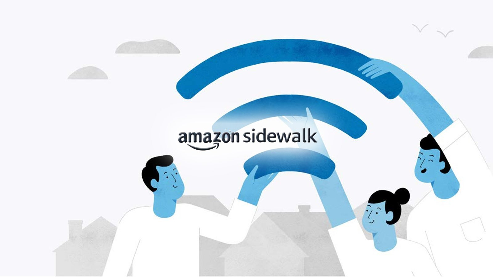

Amazon will be launching the Amazon Sidewalk service on Tuesday that automatically opts-in your Echo and Ring devices into a new feature that shares your Internet with your neighbors. Here's more about this new feature and how to opt-out of sharing your bandwidth with other Amazon devices.
Earlier this year, Amazon announced a new feature called Amazon Sidewalk that creates a low-bandwidth wireless network by bridging together supported devices, known as Sidewalk Bridges, like Echo and Ring devices.
When connected, each of these devices will share a small portion of the owner's network bandwidth, pooled together to create an Amazon Sidewalk network. This network is only accessible to other compatible Amazon Sidewalk devices and provides them with Internet access if there is no other access available.
This service aims to provide Internet access to your neighbor's devices when their Internet goes down or to give access to Amazon devices roaming throughout a neighborhood.
"Operated by Amazon at no charge to customers, Sidewalk can help simplify new device setup, extend the low-bandwidth working range of devices to help find pets or valuables with Tile trackers, and help devices stay online even if they are outside the range of their home wifi," explains the Amazon Sidewalk page.
"In the future, Sidewalk will support a range of experiences from using Sidewalk-enabled devices, such as smart security and lighting and diagnostics for appliances and tools."
When sharing your bandwidth with Amazon Sidewalk, Amazon states that the maximum bandwidth shared at a time is 80Kbps, with a hard maximum of 500MB per month.
In addition, Amazon Sidewalk devices can be configured to share the approximate location of enrolled devices so that people can track Tile devices, such as one attached to a lost pet's collar.
Amazon Sidewalk settings
Devices compatible with Amazon Sidewalk include Ring Floodlight Cam (2019), Ring Spotlight Cam Wired (2019), Ring Spotlight Cam Mount (2019), Echo (3rd gen and newer), Echo Dot (3rd gen and newer), Echo Dot for Kids (3rd gen and newer), Echo Dot with Clock (3rd gen and newer), Echo Plus (all generations), Echo Show (2nd gen), Echo Show 5, 8, 10 (all generations), Echo Spot, Echo Studio, Echo Input, and Echo Flex.